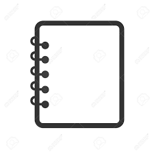
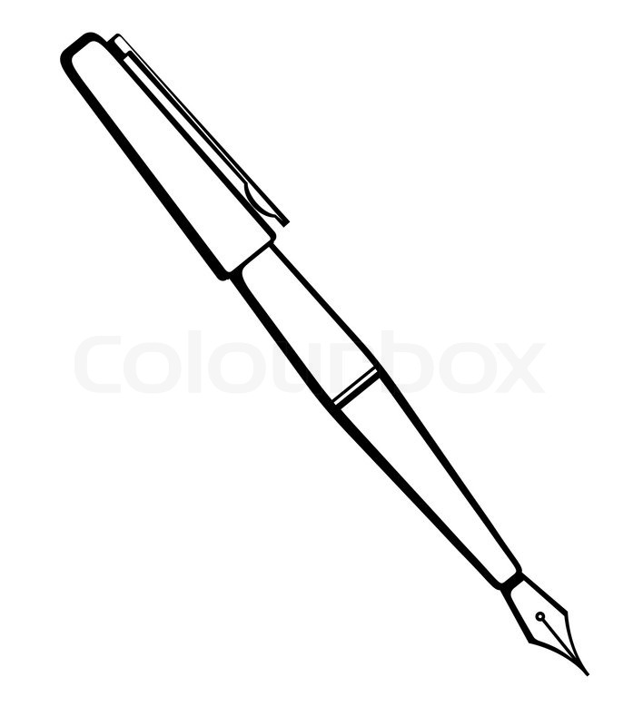
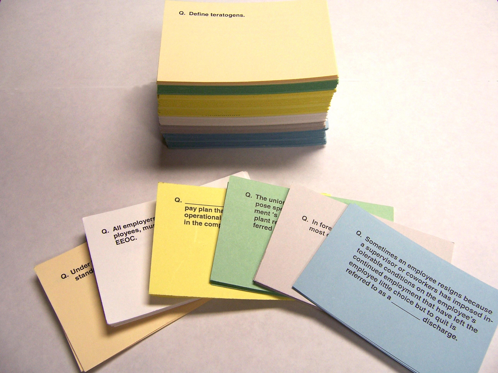
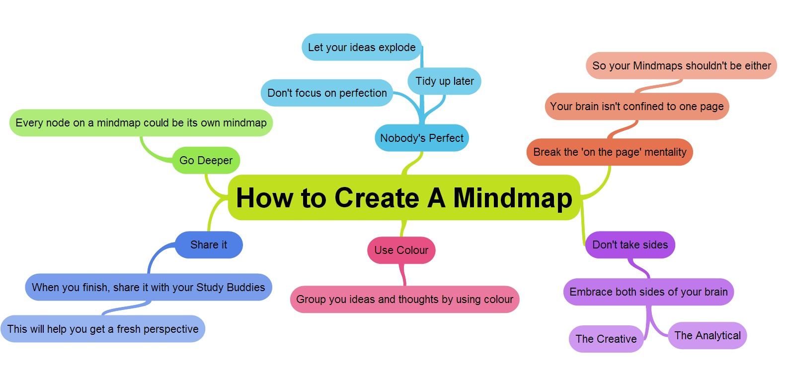
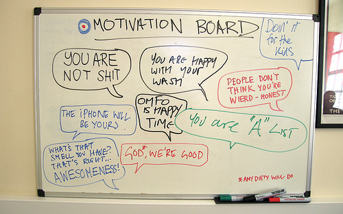

Revision tips!

Admit it, we all know that as students, revision can be super boring most of the times.
Do you:
- Get confused by the mysterious relationships among the keypoints
- Find yourself with a bad memory despite at a young age?
- Feel the lose of passion in your subject during revision?
- Find normal revision methods boring and want a change?
If you answered yes to any of the above, you may want to have a look into our revision tips.
We will recommand three useful and FUN gadgets to help you with your revision.
Don't worry about the extra time taken to make them - you'll definitely find them worth it!
Below are the three simple gadgets to boost your memory during revision

Flashcards
Flashcards can be a great method to finally memorize the equations and theories.
They can be used for nearly all subjects. To make full use of flashcards, remember these key points:
Make the flashcard early and simple, review at least three times a day and engage yourself!
The secret is that there might be surprises if you always keep your flashcards with you.

Mindmaps
Have you ever got confused by the relationships among the keypoints?
A mind map would definitely help you with that.
Simply start with a single concept drawn in the centre of a balnk page then it's time to branch out.
Rumour is that using different colours helps to keep the mind map clear.

Whiteboard
Get bored of writing revision notes and wanna try something new? Rather than making a shedload of notes you won't ever read, get a whiteboard.
Hang whiteboard in visible place, and make notes from difficult topics when revising.
Draw diagrams to refresh memory and before you know it, it'll be crammed with notes from a whole unit.
Make sure you can easily refer to it and is often in your life of sight.As soon as you feel you have understood the unit, wipe and repeat.
Mystery links
Hoe to make perfect revision FLASHCARDS
How to make a perfect MINDMAP and study effectively
6 ways to study with a WHITEBOARD